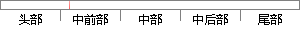

在个人中心的子模块中，用户可以看到自己的个人信息，有自己的昵称、出生日期、所在地区等信息。
片段位置图

相似结果|
相似片段 1：足用来管理用户的基本信息。用户可以查看自己的信息：修改个人的性别、公司、部门、出生日期、联系电话和邮箱信息。为了保证系统的安全性，普通用户和专家没有修改用户名、用户角色和真实姓名的权限。个人信息子模块的界面示意图如图3-5所示。
|
※ 片段修改建议 ※
近似词参考：- 个人：小我 小我私家
- 中心：中间 中央
- 自己：本身
- 自己：本身
- 地区：地域 区域
系统自动生成语句：在小我中间的子模块中，用户可以看到本身的小我信息，有本身的昵称、出生日期、所在地域等信息。
注：本片段修改建议为系统自动生成，仅供参考。